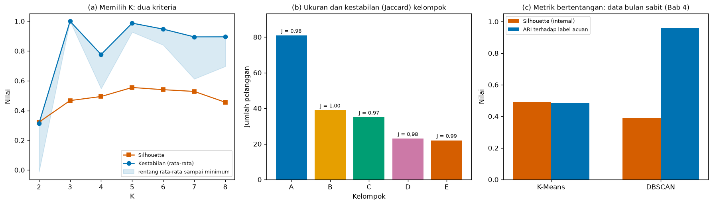

Bab 10 — Experimental Reporting and Interpretation¶
Learning Objectives¶
Setelah mempelajari bab ini, kamu mampu:
- Menyusun laporan eksperimen clustering dengan struktur yang jelas: pertanyaan, data, praproses, algoritma, kondisi, metrik, hasil, keterbatasan, dan kesimpulan.
- Menyajikan hasil dalam tabel dan gambar yang bisa dibaca sendiri tanpa harus membaca kodenya.
- Menjelaskan hasil metrik yang bertentangan tanpa memilih angka yang menguntungkan.
- Menulis tafsir ilmiah yang membedakan temuan, tafsiran, dan dugaan.
- Mengenali dan menghindari klaim berlebihan (overclaiming), termasuk klaim sebab-akibat.
- Menyusun laporan dari file hasil sehingga tidak ada angka yang diketik tangan.
- Mencatat detail reproduksibilitas dalam laporan.
- Menjelaskan apa yang sudah dan belum dicakup Level 6, dan apa yang dibawa ke Level 7.
- Menjalankan Eksperimen G dari awal sampai akhir dan mencatatnya.
Introduction¶
Bab 1 sampai 9 mengajarkan cara menjalankan eksperimen: merancang, menyetel, membandingkan, menggambar, menafsirkan, dan menguji kestabilan. Hasil semua itu ada di berbagai tabel, gambar, dan file CSV. Tetapi pekerjaan belum selesai sebelum orang lain bisa memahami, memeriksa, dan mengulangnya.
Bab ini mengajarkan cara mengomunikasikan hasil. Pertanyaan yang ingin dijawab:
"Bagaimana melaporkan eksperimen clustering supaya jujur, bisa diperiksa, dan tidak menyatakan lebih dari yang didukung datanya?"
Pelaporan sering dianggap pekerjaan terakhir yang tinggal "menulis hasil". Padahal di sinilah banyak eksperimen yang baik menjadi menyesatkan: angka yang menguntungkan dipilih, keterbatasan tidak disebut, dan "asosiasi" diam-diam menjadi "sebab". Bab ini membahas cara menghindarinya.
Contoh yang dipakai adalah eksperimen Mall Customers dari Bab 7 dan 9. Kita menyusun laporannya dari file hasil yang sudah tersimpan, sehingga tabel dan angkanya berasal dari eksekusi nyata dan bukan hasil ketikan.
Batas dengan Level 7
Bab ini mengajarkan pelaporan satu rangkaian eksperimen. Makalah akademik lengkap, tinjauan pustaka sistematis, perumusan celah riset, dan persiapan publikasi adalah materi Level 7 (Research Project). Di sini kita hanya menyiapkan bahan dan kebiasaan untuk ke sana.
Prasyarat
Bab 2 (pencatatan), Bab 4 (tabel hasil dan metrik bertentangan), Bab 7 (profil), Bab 8 (visualisasi), dan Bab 9 (kestabilan). Skrip bab ini membaca file hasil dari Bab 4, 7, dan 9, jadi jalankan skrip Bab 7 dan 9 terlebih dahulu.
Fundamental Concepts¶
| Istilah | Arti |
|---|---|
| Experimental report | Dokumen yang menjelaskan apa yang dikerjakan, bagaimana, dan apa hasilnya, cukup rinci untuk diperiksa |
| Finding (temuan) | Hal yang diamati langsung dari data (misalnya "Silhouette K = 5 adalah 0,555") |
| Interpretation (tafsiran) | Makna yang kita berikan pada temuan, beserta alasannya |
| Speculation (dugaan) | Penjelasan yang belum diuji; harus ditandai sebagai dugaan |
| Overclaiming | Menyatakan lebih dari yang didukung bukti |
| Limitation | Batas yang membuat kesimpulan tidak boleh digeneralisasi |
| Result table | Tabel angka hasil eksperimen, dengan satuan, jumlah data, dan konfigurasi yang jelas |
| Figure caption | Keterangan gambar yang menyebut apa yang digambar, data apa, dan apa yang perlu dibaca |
| Reproducibility statement | Pernyataan seed, versi, data, dan file yang diperlukan untuk mengulang eksperimen |
| Single source of truth | Prinsip bahwa setiap angka dalam laporan berasal dari satu file sumber, bukan disalin tangan |
Detailed Explanation¶
Laporan bukan catatan kronologis¶
Laporan tidak menceritakan semua yang kamu coba menurut urutan waktu. Laporan menjawab satu pertanyaan, dengan bukti yang tersusun. Namun jangan menyembunyikan percobaan yang tidak berhasil jika memengaruhi kesimpulan. Misalnya, jika kamu mencoba K = 2 sampai 8 dan hanya melaporkan K = 5, pembaca tidak tahu bahwa K = 3 lebih stabil.
Struktur laporan¶
Urutan yang dipakai dalam bab ini:
- Pertanyaan dan tujuan. Apa yang ingin diketahui? Apakah eksperimen bersifat eksploratif atau menguji hipotesis? (Bab 1: pada clustering tanpa label acuan, tujuan sering eksploratif.)
- Data. Sumber, ukuran, kolom, nilai kosong, rentang nilai, dan sidik jari data.
- Praproses dan fitur. Apa yang dilakukan pada data, fitur mana yang dipakai dan mana yang tidak.
- Algoritma dan konfigurasi. Algoritma, hyperparameter, seed, dan cara memilih parameter.
- Kondisi eksperimen. Apa yang divariasikan dan apa yang dikontrol (Bab 2).
- Metrik. Metrik apa yang dipakai dan mengapa. Metrik eksternal hanya bila ada label acuan.
- Hasil. Tabel dan gambar, dengan pembacaan singkat.
- Pembahasan. Tafsiran, hasil yang bertentangan, dan perbandingan.
- Keterbatasan.
- Kesimpulan yang didukung data.
- Reproduksibilitas. Seed, versi, file.
Laporan contoh di bawah menggabungkan beberapa bagian supaya ringkas: kondisi eksperimen dan metrik dimasukkan ke bagian algoritma, dan pembahasan dimasukkan ke bagian hasil. Strukturnya boleh disesuaikan, selama semua informasi di daftar ini tersedia.
Mendeskripsikan data dan praproses¶
Pembaca harus bisa menjawab: data apa persisnya yang dipakai? Laporkan:
- Sumber dan cara memperolehnya (dan lisensinya bila relevan).
- Jumlah baris dan kolom, nilai kosong, rentang tiap kolom penting.
- Sidik jari data (Bab 9), supaya orang bisa memeriksa bahwa data yang sama dipakai.
- Setiap langkah praproses berurutan: skala, pembuangan kolom, penanganan nilai kosong.
Menyatakan "data dibersihkan" tidak cukup. Sebutkan apa yang dibersihkan.
Tabel hasil¶
Tabel yang baik memuat konfigurasi dan hasil yang cukup agar baris bisa dipahami sendiri:
- Beri judul dan satuan pada kolom.
- Sebutkan jumlah data tiap baris (misalnya ukuran kelompok).
- Pakai jumlah desimal yang konsisten, dan jangan memberi kesan presisi palsu (tiga desimal untuk Silhouette sudah cukup).
- Laporkan minimum atau sebaran, bukan hanya rata-rata (Bab 7 dan 9).
- Jangan menyoroti hanya sel yang menguntungkan.
Gambar¶
Gambar yang baik (Bab 8) memiliki judul, label sumbu, legenda, dan keterangan (caption) yang menyebut data, konfigurasi, dan apa yang perlu dibaca. Rujuk gambar dari teks ("Gambar 1b menunjukkan..."). Gambar juga harus jujur: sumbu tidak menyesatkan, warna konsisten, dan ketidakpastian ditandai.
Melaporkan profil kelompok¶
Dari Bab 7: laporkan ukuran, rata-rata dan median, sebaran, serta variabel di luar clustering yang diuji dengan uji permutasi. Beri nama kelompok yang deskriptif (berbasis aturan tertulis), bukan menghakimi. Pemisahan antara variabel yang dipakai dan tidak dipakai harus tertulis di laporan.
Membandingkan perilaku algoritma¶
Dari Bab 4: perbandingan hanya adil bila kondisinya sama dan terdokumentasi. Laporkan protokolnya (dataset, praproses, cara menentukan parameter), hasil semua metrik, dan jangan menyimpulkan algoritma terbaik secara umum. Sebut kondisi tempat algoritma itu unggul atau gagal, dan batasan data yang dipakai.
Menjelaskan hasil yang bertentangan¶
Metrik sering tidak sepakat. Cara melaporkannya:
- Tampilkan keduanya. Jangan memilih metrik yang mendukung kesimpulan yang diinginkan.
- Jelaskan apa yang diukur tiap metrik. Silhouette menilai keterpisahan dan kekompakan, kestabilan menilai konsistensi terhadap sampel, ARI menilai kecocokan dengan label acuan.
- Cari penyebab pertentangan (misalnya bentuk kelompok tidak bulat, sehingga metrik berbasis jarak ke pusat menyesatkan).
- Nyatakan keputusan dan alasannya, serta bahwa itu keputusan, bukan fakta.
Contoh dalam bab ini: pada data bulan sabit (Bab 4), Silhouette dan Davies-Bouldin lebih menyukai K-Means, sedangkan ARI terhadap label acuan jauh lebih menyukai DBSCAN. Di Eksperimen G kita melihat angkanya.
Menulis tafsir ilmiah¶
Bedakan tiga jenis pernyataan, dan tulis dengan bahasa yang sesuai:
| Jenis | Contoh | Bahasa |
|---|---|---|
| Temuan (diamati) | "Silhouette K = 5 adalah 0,555, tertinggi di antara K = 2 sampai 8." | Langsung, dengan angka |
| Tafsiran (alasan dari temuan) | "Ini menunjukkan bahwa K = 5 memberi kelompok yang paling kompak dan terpisah menurut Silhouette." | "menunjukkan", "sejalan dengan", "konsisten dengan" |
| Dugaan (belum diuji) | "Kelompok E mungkin terdiri atas pelanggan muda yang belanja banyak." | "mungkin", "dugaan kami", disertai cara mengujinya |
Selalu tuliskan batas: pada data apa, dengan konfigurasi apa, dan pada kondisi apa kesimpulan itu berlaku.
Menghindari klaim berlebihan¶
| Klaim berlebihan | Mengapa bermasalah | Tulisan yang lebih tepat |
|---|---|---|
| "Hasil ini membuktikan ada lima segmen pelanggan." | Clustering membagi data, bukan membuktikan ada segmen nyata | "Data ini dapat dibagi menjadi lima kelompok yang konsisten terhadap seed dan sampel." |
| "K = 5 adalah yang terbaik." | Terbaik menurut apa? Silhouette? Stabilitas? | "K = 5 memberi Silhouette tertinggi di antara K = 2 sampai 8." |
| "Umur membuat kelompok E berbelanja banyak." | Sebab-akibat tidak bisa disimpulkan dari clustering | "Kelompok E rata-rata lebih muda daripada kelompok lain." |
| "Kelompok C pelanggan pelit." | Penilaian, bukan deskripsi, dan tidak didukung bukti | "Kelompok C: pendapatan tinggi, skor belanja rendah." |
| "Hasil stabil, jadi kelompoknya nyata." | Stabil tidak berarti nyata (Bab 9) | "Hasil konsisten terhadap seed dan sampel yang diuji." |
| "Algoritma X lebih baik dari Y." | Bergantung pada data dan metrik | "Pada dataset ini, dengan konfigurasi ini, X mendapat skor lebih tinggi menurut metrik M." |
Keterbatasan¶
Bagian keterbatasan bukan formalitas. Ia memberi tahu pembaca sejauh mana kesimpulan boleh dipercaya. Pertanyaan untuk menyusunnya:
- Seberapa besar dan seberapa mewakili datanya?
- Berapa algoritma, fitur, dan konfigurasi yang diuji?
- Apa yang tidak diuji (kestabilan, praproses lain, data lain)?
- Apa yang diandalkan pada pilihan subjektif (ambang, penamaan, ambang Silhouette)?
- Apakah ada label acuan, dan bagaimana dipakai?
- Apakah ada potensi bias dalam data atau pemilihan fitur?
Reproduksibilitas dalam laporan¶
Sertakan bagian pendek yang memuat seed, versi Python dan pustaka, sistem operasi, sidik jari data, serta daftar file hasil dan skrip. Bab 9 menunjukkan cara mencatat semuanya. Laporan yang tidak memuat ini sulit diperiksa orang lain.
Satu sumber kebenaran¶
Angka yang diketik tangan ke laporan rawan salah, dan bisa tidak sinkron bila eksperimen diulang. Praktik yang lebih aman: laporan dibuat oleh kode dari file hasil. Dengan begitu, mengulang eksperimen memperbarui laporan secara otomatis, dan setiap angka bisa ditelusuri ke satu file.
Kita tetap menulis kata-kata tafsiran sendiri, tetapi angka di dalamnya diisi dari file sumber.
Pemeriksa kata berlebihan¶
Bab ini memperkenalkan pemeriksa sederhana: fungsi yang menandai kalimat yang memuat kata berisiko ("membuktikan", "pasti", "menyebabkan", "terbaik", dan sebagainya) bila kalimat itu tidak memuat kata penyangkal. Ia hanya heuristik. Ia bisa terlewat (kalimat berlebihan yang memakai kata lain) dan bisa salah tangkap. Ia membantu membiasakan diri, bukan pengganti membaca laporan dengan teliti.
Persiapan untuk Level 7¶
Level 7 membawa pelaporan ke tingkat makalah penelitian. Hal-hal yang sudah kamu miliki dari Level 6:
| Dari Level 6 | Dipakai di Level 7 |
|---|---|
| Pertanyaan eksperimen dan variabel (Bab 1, 2) | Pertanyaan riset dan rancangan metodologi |
| Pencatatan konfigurasi (Bab 2, 9) | Bagian metode yang bisa direproduksi |
| Perbandingan adil (Bab 4) | Dasar membandingkan dengan penelitian lain |
| Kestabilan dan keterbatasan (Bab 9) | Analisis keterbatasan makalah |
| Laporan eksperimen (bab ini) | Bagian hasil dan pembahasan |
Yang belum dicakup dan menjadi materi Level 7: tinjauan pustaka sistematis, perumusan celah riset, pemilihan dataset berdasarkan literatur, pengujian statistik yang lebih formal, penulisan makalah, dan persiapan publikasi.
Kesalahan umum¶
- Hanya melaporkan hasil yang menguntungkan.
- Mengetik angka tangan, lalu angka tidak sinkron dengan hasil.
- Tidak menyebutkan keterbatasan.
- Klaim sebab-akibat dari clustering.
- Menyatakan satu algoritma terbaik secara umum.
- Melaporkan metrik tanpa konfigurasi (K, seed, praproses).
- Tidak memberi keterangan pada gambar atau tabel.
- Menyembunyikan metrik yang bertentangan.
- Memberi label kelompok yang menghakimi atau stereotip.
- Tidak mencatat seed, versi, dan sidik jari data.
Mathematical Foundation¶
Bab ini tidak memperkenalkan rumus baru. Angka yang muncul dalam laporan (Silhouette, ARI, Jaccard, uji permutasi) sudah dijelaskan di Level 5 dan Bab 3 sampai 9. Pelaporan berarti menempatkan angka-angka itu pada konteks yang benar, bukan menghitung ulang.
Satu hal yang berhubungan dengan angka: jumlah desimal. Silhouette, ARI, dan Jaccard bernilai antara -1 dan 1, dan tiga desimal sudah lebih dari cukup bagi data berukuran ratusan. Menulis enam desimal memberi kesan presisi yang tidak dimiliki hasil tersebut, karena hasilnya sendiri bergeser dengan seed atau sampel.
Experimental Procedure (Eksperimen G)¶
- Tujuan: menyusun laporan eksperimen yang lengkap, dapat diperiksa, dan tidak berlebihan, dari file hasil yang sudah tersimpan.
- Dataset (alasan): Mall Customers (200 pelanggan), karena eksperimen pemilihan K, profil, dan kestabilannya sudah dilakukan di Bab 7 dan 9. Untuk contoh metrik yang bertentangan, dipakai hasil benchmark data bulan sabit dari Bab 4.
- Sumber file:
07_cluster_profile.csv,09_stability_by_k.csv,09_cluster_jaccard.csv,09_config.json, dan04_benchmark.csvdiexamples/level-6/results/. - Langkah: (a) baca file hasil, (b) deskripsikan data, (c) hitung ulang uji permutasi umur (sebagai pemeriksaan silang dengan Bab 7), (d) susun tabel hasil, (e) contoh metrik bertentangan, (f) periksa kata berlebihan, (g) susun dan simpan laporan, (h) buat gambar untuk laporan.
- Hasil disimpan:
10_report.mddan10_config.jsondiexamples/level-6/results/, serta satu gambar didocs/assets/level-6/.
Python Implementation¶
Skrip lengkapnya ada di examples/level-6/10_experimental_reporting_and_interpretation.py, dan notebook-nya di notebooks/level-6/10-experimental-reporting-and-interpretation.ipynb. Setiap potongan kode diikuti penjelasannya.
Konteks masalah: kamu harus menyerahkan laporan eksperimen kepada rekan atau dosen yang belum melihat prosesnya.
Tujuan eksperimen: menghasilkan laporan yang angkanya berasal dari file sumber dan yang kalimatnya tidak melebih-lebihkan.
Pustaka: NumPy, pandas, Matplotlib, scikit-learn (KMeans), pustaka standar (json, re), dan alat pencatat _experiment.py.
Jalankan Bab 7 dan Bab 9 dahulu
Skrip ini membaca 07_cluster_profile.csv, 09_stability_by_k.csv, 09_cluster_jaccard.csv, dan 09_config.json. Jika file-file itu belum ada, jalankan 07_cluster_interpretation_and_profiling.py dan 09_cluster_stability_and_reproducibility.py terlebih dahulu. Pesan galatnya adalah FileNotFoundError.
Bagian A — Siapkan alat¶
import json
import re
import numpy as np
import pandas as pd
import matplotlib.pyplot as plt
import _experiment as ex
SEED = 42
RESULTS = ex.RESULTS_DIR
def fmt(value, digits=3):
"""Angka dengan koma desimal, seperti penulisan bahasa Indonesia."""
return f"{value:.{digits}f}".replace(".", ",")
def md_table(frame):
"""Mengubah DataFrame menjadi tabel Markdown (tanpa pustaka tambahan)."""
header = "| " + " | ".join(map(str, frame.columns)) + " |"
divider = "|" + "|".join("---" for _ in frame.columns) + "|"
rows = ["| " + " | ".join(map(str, row)) + " |" for row in frame.itertuples(index=False)]
return "\n".join([header, divider, *rows])
Penjelasan:
fmt(value, digits)memformat angka dengan koma desimal, seperti penulisan bahasa Indonesia.f"{value:.{digits}f}"memformat dengan jumlah desimal yang kita tentukan, lalu.replace(".", ",")mengganti titik dengan koma.md_table(frame)mengubah DataFrame menjadi tabel Markdown. Header dibuat dari nama kolom, garis pemisah dari---, dan setiap baris dariitertuples. Dengan fungsi ini kita tidak perlu pustaka tambahan (sepertitabulate).
Bagian B — Membaca file hasil¶
profile = pd.read_csv(RESULTS / "07_cluster_profile.csv", index_col="Cluster")
k_table = pd.read_csv(RESULTS / "09_stability_by_k.csv")
jaccard = pd.read_csv(RESULTS / "09_cluster_jaccard.csv", index_col=0)
benchmark = pd.read_csv(RESULTS / "04_benchmark.csv")
config = json.loads((RESULTS / "09_config.json").read_text(encoding="utf-8"))
for name, table in [("07_cluster_profile", profile), ("09_stability_by_k", k_table), ("09_cluster_jaccard", jaccard), ("04_benchmark", benchmark)]:
print(f"{name}.csv: {len(table)} baris")
print("09_config.json:", sorted(config))
07_cluster_profile.csv: 5 baris
09_stability_by_k.csv: 7 baris
09_cluster_jaccard.csv: 5 baris
04_benchmark.csv: 30 baris
09_config.json: ['algorithm', 'bootstrap_repeats', 'dataset', 'dataset_fingerprint', 'environment', 'features', 'preprocessing', 'seed', 'seed_runs', 'stability_measure', 'subsample_fractions', 'subsample_repeats']
Penjelasan: pd.read_csv membaca tabel hasil, dan json.loads membaca file konfigurasi Bab 9. index_col menjadikan kolom kelompok sebagai indeks. Perulangan di bawahnya mencetak jumlah baris tiap file, sebagai pemeriksaan bahwa file terbaca dan ukurannya wajar (misalnya 5 kelompok, 7 nilai K).
Bagian C — Deskripsi data¶
df = pd.read_csv("data/mall_customers.csv")
used = ["Annual Income (k$)", "Spending Score (1-100)"]
data_facts = {
"n": len(df),
"kolom": list(df.columns),
"kosong": int(df.isna().sum().sum()),
"perempuan": int((df["Gender"] == "Female").sum()),
"laki": int((df["Gender"] == "Male").sum()),
"pendapatan": (int(df[used[0]].min()), int(df[used[0]].max())),
"skor": (int(df[used[1]].min()), int(df[used[1]].max())),
"umur": (int(df["Age"].min()), int(df["Age"].max())),
}
print(data_facts)
print("Sidik jari data (cocok dengan konfigurasi Bab 9):", config["dataset_fingerprint"])
{'n': 200, 'kolom': ['CustomerID', 'Gender', 'Age', 'Annual Income (k$)', 'Spending Score (1-100)'], 'kosong': 0, 'perempuan': 112, 'laki': 88, 'pendapatan': (15, 137), 'skor': (1, 99), 'umur': (18, 70)}
Sidik jari data (cocok dengan konfigurasi Bab 9): edb2a3858344
Penjelasan: data_facts mengumpulkan fakta data langsung dari file: jumlah baris, daftar kolom, jumlah nilai kosong (df.isna().sum().sum()), jumlah tiap gender, dan rentang tiga kolom numerik. Bagian ini akan masuk ke bagian "Data" laporan. Sidik jari data dari konfigurasi Bab 9 dicetak untuk dicocokkan.
Bagian D — Uji permutasi umur¶
# Uji permutasi umur antar kelompok, sama dengan Bab 7 (label kelompok dibangun ulang dengan konfigurasi yang sama)
from sklearn.cluster import KMeans
z = ((df[used] - df[used].mean()) / df[used].std()).to_numpy()
raw_labels = KMeans(n_clusters=5, n_init=10, random_state=SEED).fit(z).labels_
order = np.argsort(-np.bincount(raw_labels), kind="stable")
letter = {int(old): "ABCDE"[new] for new, old in enumerate(order)}
cluster = np.array([letter[int(c)] for c in raw_labels])
assert [int((cluster == c).sum()) for c in "ABCDE"] == profile["n"].tolist(), "ukuran kelompok tidak cocok dengan 07_cluster_profile.csv"
def spread(values, labels):
means = pd.Series(values).groupby(labels).mean()
return means.max() - means.min()
rng = np.random.default_rng(SEED)
age = df["Age"].to_numpy(float)
observed = spread(age, cluster)
shuffled = [spread(age, rng.permutation(cluster)) for _ in range(2000)]
p_floor = 1 / (len(shuffled) + 1) # p terkecil yang mungkin pada uji permutasi
p_age = (sum(s >= observed for s in shuffled) + 1) / (len(shuffled) + 1)
at_floor = p_age <= p_floor
p_text = f"p ≤ {fmt(p_floor, 4)}" if at_floor else f"p = {fmt(p_age, 4)}"
print(f"Umur: selisih rata-rata antar kelompok {observed:.3f} tahun | batas acak 95% {np.percentile(shuffled, 95):.3f} | {p_text}"
+ (f" (tidak satu pun dari {len(shuffled)} permutasi mencapai selisih teramati)" if at_floor else ""))
Umur: selisih rata-rata antar kelompok 19.945 tahun | batas acak 95% 9.890 | p ≤ 0,0005 (tidak satu pun dari 2000 permutasi mencapai selisih teramati)
Penjelasan:
- Kita membangun ulang label kelompok dengan konfigurasi yang sama dengan Bab 7 (K-Means K = 5,
n_init=10, seed 42, huruf menurut ukuran). assert [...] == profile["n"].tolist()adalah pemeriksaan silang: ukuran kelompok hasil bangun ulang harus sama dengan yang tersimpan di07_cluster_profile.csv. Jika berbeda, skrip berhenti dengan pesan, karena berarti kita bukan lagi melaporkan kelompok yang sama.- Uji permutasi sama seperti Bab 7: mengacak label 2000 kali dan menghitung seberapa sering selisih acak sama besar atau lebih besar dari selisih asli.
Bagian E — Tabel hasil¶
best_sil = k_table.loc[k_table["silhouette"].idxmax()]
best_stab = k_table.loc[k_table["stability_mean"].idxmax()]
k5 = k_table.loc[k_table["k"] == 5].iloc[0]
table_k = pd.DataFrame({
"K": k_table["k"], "Silhouette": k_table["silhouette"].map(fmt),
"Kestabilan (rata-rata)": k_table["stability_mean"].map(fmt), "Kestabilan (minimum)": k_table["stability_min"].map(fmt),
})
table_profile = pd.DataFrame({
"Kelompok": profile.index, "Ukuran": profile["n"],
"Pendapatan (k$), rata-rata": profile["pendapatan_rata"].map(lambda v: fmt(v, 1)),
"Skor belanja, rata-rata": profile["skor_rata"].map(lambda v: fmt(v, 1)),
"Umur, median": profile["umur_median"].map(lambda v: fmt(v, 1)),
"Jaccard (kestabilan)": jaccard["jaccard_rata"].map(fmt).to_numpy(),
})
print(table_k.to_string(index=False))
print(table_profile.to_string(index=False))
K Silhouette Kestabilan (rata-rata) Kestabilan (minimum)
2 0,321 0,313 -0,013
3 0,467 1,000 1,000
4 0,494 0,776 0,547
5 0,555 0,987 0,927
6 0,540 0,947 0,840
7 0,528 0,895 0,612
8 0,455 0,895 0,697
Kelompok Ukuran Pendapatan (k$), rata-rata Skor belanja, rata-rata Umur, median Jaccard (kestabilan)
A 81 55,3 49,5 46,0 0,979
B 39 86,5 82,1 32,0 1,000
C 35 88,2 17,1 42,0 0,970
D 23 26,3 20,9 46,0 0,980
E 22 25,7 79,4 23,5 0,990
Penjelasan:
k_table["silhouette"].idxmax()memberi indeks baris Silhouette tertinggi..loc[...]mengambil baris itu. Hal yang sama untuk kestabilan. Dengan cara ini, kalimat "Silhouette tertinggi pada K = 5" dihasilkan dari data, bukan diketik.table_kdantable_profileadalah tabel yang siap dicetak..map(fmt)memformat setiap sel dengan koma desimal. Kolom Jaccard diambil dengan.to_numpy()agar indeksnya tidak ikut (indeksjaccardadalah huruf kelompok, sedangkantable_profilememakai nomor baris).
Bagian F — Metrik yang bertentangan¶
# Contoh metrik yang bertentangan: dataset "Bulan sabit" pada benchmark Bab 4
crescent = benchmark[(benchmark["dataset"] == "Bulan sabit") & benchmark["algorithm"].isin(["K-Means", "DBSCAN"])].set_index("algorithm")
by_sil = crescent["silhouette"].idxmax()
by_ari = crescent["ari_reference"].idxmax()
print(crescent[["silhouette", "davies_bouldin", "ari_reference"]].round(3).to_string())
print(f"Dipilih menurut Silhouette: {by_sil} | dipilih menurut ARI terhadap label acuan: {by_ari}")
silhouette davies_bouldin ari_reference
algorithm
K-Means 0.492 0.816 0.486
DBSCAN 0.389 1.016 0.960
Dipilih menurut Silhouette: K-Means | dipilih menurut ARI terhadap label acuan: DBSCAN
Penjelasan: dari hasil benchmark Bab 4 kita ambil baris dataset "Bulan sabit" untuk dua algoritma (K-Means dan DBSCAN), lalu menyusunnya per algoritma dengan set_index("algorithm"). idxmax() pada Silhouette dan ARI menunjukkan algoritma mana yang dipilih tiap metrik. Dua baris yang dicetak di akhir menyatakan pertentangannya secara eksplisit.
Bagian G — Pemeriksa kata berlebihan¶
# Pemeriksa sederhana untuk kata yang cenderung melebih-lebihkan. Ini heuristik, bukan pengganti membaca.
RISKY = ["membuktikan", "pasti", "menyebabkan", "penyebab", "terbaik", "sempurna", "selalu", "benar-benar", "jelas bahwa"]
NEGATIONS = ("tidak", "bukan", "belum", "jangan")
RISKY_PATTERNS = {w: re.compile(r"(?<!\w)" + re.escape(w) + r"(?!\w)") for w in RISKY} # kata utuh
def flag_overclaims(text):
"""Mengembalikan kalimat yang memuat kata berisiko (kata utuh) tanpa kata penyangkal di kalimat yang sama."""
flagged = []
for sentence in re.split(r"(?<=[.!?])\s+", text):
lowered = sentence.lower()
hits = [w for w, pattern in RISKY_PATTERNS.items() if pattern.search(lowered)]
if hits and not set(re.findall(r"\w+", lowered)) & set(NEGATIONS):
flagged.append((hits, sentence.strip()))
return flagged
draft = ("Hasil ini membuktikan bahwa lima segmen pelanggan benar-benar ada. Kelompok E pasti boros karena umurnya muda. "
"K = 5 adalah pilihan terbaik. Kelompok C tidak berbelanja banyak.")
for hits, sentence in flag_overclaims(draft):
print(f"DITANDAI {hits}: {sentence}")
DITANDAI ['membuktikan', 'benar-benar']: Hasil ini membuktikan bahwa lima segmen pelanggan benar-benar ada.
DITANDAI ['pasti']: Kelompok E pasti boros karena umurnya muda.
DITANDAI ['terbaik']: K = 5 adalah pilihan terbaik.
Penjelasan baris demi baris:
RISKYadalah daftar kata yang cenderung melebih-lebihkan.NEGATIONSadalah kata penyangkal. Pencocokan memakai kata utuh (RISKY_PATTERNS), sehingga "dipastikan" tidak dianggap "pasti", dan kata penyangkal dikenali walau menempel pada tanda baca ("tidak,").re.split(r"(?<=[.!?])\s+", text)memecah teks menjadi kalimat: memotong pada spasi yang didahului titik, tanda tanya, atau tanda seru.- Untuk tiap kalimat,
hitsadalah kata berisiko yang muncul. Kalimat ditandai hanya bila adahitsdan tidak ada kata penyangkal di kalimat itu. Dengan begitu "tidak membuktikan" tidak ditandai. draftadalah contoh draf yang sengaja buruk. Fungsi menandai kalimat yang berlebihan, dan melewatkan kalimat yang memakai kata penyangkal.- Fungsi ini heuristik. Latihan 1 menunjukkan kalimat yang lolos.
Bagian H — Menyusun laporan¶
env = config["environment"]
k_sil, k_stab = int(best_sil["k"]), int(best_stab["k"])
if k_sil == k_stab:
criteria_text = f"Kedua kriteria menunjuk K yang sama (K = {k_sil})."
else:
criteria_text = ("Kedua kriteria **tidak menunjuk K yang sama**. Silhouette menilai keterpisahan dan kekompakan kelompok. "
f"Kestabilan menilai konsistensi hasil terhadap sampel. K = {k_stab} paling konsisten tetapi Silhouette-nya lebih rendah.")
if k_sil == 5:
choice_text = "Kami memilih K = 5 karena Silhouette tertinggi dan kestabilannya juga tinggi, bukan karena K = 5 terbukti benar."
else:
choice_text = f"K = 5 bukan K dengan Silhouette tertinggi (K = {k_sil}); pilihan ini membutuhkan justifikasi tambahan."
if at_floor or p_age < 0.05:
age_text = "Perbedaan umur antar kelompok lebih besar daripada yang diharapkan secara acak"
else:
age_text = "Perbedaan umur antar kelompok tidak melampaui yang diharapkan secara acak"
perm_text = (f"selisih rata-rata terbesar dan terkecil {fmt(observed)} tahun, batas acak 95% {fmt(np.percentile(shuffled, 95))}, {p_text}, "
f"uji permutasi {len(shuffled)} kali" + (f"; tidak satu pun permutasi mencapai selisih teramati, jadi p tidak dapat lebih kecil dari batas itu" if at_floor else ""))
stable_k = float(k5["stability_mean"]) >= 0.9 and float(jaccard["jaccard_rata"].min()) >= 0.6
assert 0.8 in config["subsample_fractions"], "konfigurasi Bab 9 tidak memuat sampel 80%"
stable_text = ("menghasilkan lima kelompok yang konsisten terhadap seed (dengan n_init = 10) dan sampel" if stable_k
else "menghasilkan lima kelompok, tetapi kestabilannya terhadap sampel atau bootstrap tidak memadai untuk sebagian kelompok")
more_stable = (f", tetapi K = {k_stab} lebih stabil" if k_stab != 5 else "")
sil_support = "didukung oleh Silhouette tertinggi" if k_sil == 5 else f"tidak didukung oleh Silhouette (tertinggi pada K = {k_sil})"
facts = data_facts
sizes = ", ".join(f"{c} ({int(profile.loc[c, 'n'])})" for c in profile.index)
report = f"""# Laporan Eksperimen: Pengelompokan Pelanggan Mall Customers dengan K-Means
## 1. Pertanyaan dan tujuan
Apakah pelanggan dapat dikelompokkan berdasarkan pendapatan tahunan dan skor belanja, dan seberapa konsisten pengelompokan itu terhadap perubahan seed, sampel, dan jumlah kelompok (K)? Eksperimen ini bersifat **eksploratif**: tidak ada label acuan dan tidak ada hipotesis yang diuji secara statistik formal.
## 2. Data
Mall Customers, {facts['n']} pelanggan, kolom: {', '.join(facts['kolom'])}. Nilai kosong: {facts['kosong']}. Perempuan {facts['perempuan']}, laki-laki {facts['laki']}. Rentang pendapatan {facts['pendapatan'][0]} sampai {facts['pendapatan'][1]} k$, skor belanja {facts['skor'][0]} sampai {facts['skor'][1]}, umur {facts['umur'][0]} sampai {facts['umur'][1]} tahun. Sumber: Kaggle (salinan di `data/mall_customers.csv`). Sidik jari data: `{config['dataset_fingerprint']}`.
## 3. Praproses dan fitur
Fitur untuk clustering: {', '.join(config['features'])}. Praproses: {config['preprocessing']}. Umur dan gender **tidak** dipakai clustering dan hanya dipakai untuk menggambarkan kelompok.
## 4. Algoritma dan konfigurasi
{config['algorithm']}, seed {config['seed']}. Untuk memilih K, K = 2 sampai 8 dibandingkan memakai Silhouette dan kestabilan terhadap sampel (80% data, {config['subsample_repeats']} pengulangan). Kestabilan tiap kelompok dihitung dengan {config['bootstrap_repeats']} sampel bootstrap.
## 5. Hasil: memilih K
{md_table(table_k)}
Silhouette tertinggi pada K = {k_sil} ({fmt(best_sil['silhouette'])}). Kestabilan rata-rata tertinggi pada K = {k_stab} ({fmt(best_stab['stability_mean'])}). Untuk K = 5, Silhouette {fmt(k5['silhouette'])} dan kestabilan rata-rata {fmt(k5['stability_mean'])} (minimum {fmt(k5['stability_min'])}).
{criteria_text} {choice_text}
## 6. Hasil: profil kelompok (K = 5)
{md_table(table_profile)}
Ukuran kelompok: {sizes}. {age_text} ({perm_text}). Ini asosiasi, bukan sebab: kami tidak menyimpulkan bahwa umur memengaruhi perilaku belanja.
## 7. Keterbatasan
- Hanya satu dataset kecil ({facts['n']} pelanggan), satu algoritma (K-Means), dan dua fitur.
- Kelompok terkecil hanya {int(profile['n'].min())} pelanggan, sehingga rata-rata kelompok itu bergantung pada sedikit data.
- Kestabilan menunjukkan konsistensi terhadap sampel dan seed, bukan bahwa kelompok itu nyata atau berguna.
- Nama kelompok pada profil adalah label deskriptif dan bergantung pada ambang yang dipilih.
- Hasil belum diuji pada pelanggan di luar data ini.
## 8. Kesimpulan yang didukung data
Pada data ini, K-Means dengan K = 5 pada pendapatan dan skor belanja {stable_text}, dengan Jaccard tiap kelompok antara {fmt(jaccard['jaccard_rata'].min())} dan {fmt(jaccard['jaccard_rata'].max())}. Pilihan K = 5 {sil_support}{more_stable}.
## 9. Reproduksibilitas
Python {env['python']}, NumPy {env['numpy']}, pandas {env['pandas']}, scikit-learn {env['scikit-learn']}, SciPy {env['scipy']}, Matplotlib {env['matplotlib']}, {env['os']}. Seed {config['seed']}. File hasil: `07_cluster_profile.csv`, `09_stability_by_k.csv`, `09_cluster_jaccard.csv`, `09_config.json`.
"""
problems = flag_overclaims(report)
print(f"Laporan: {len(report.splitlines())} baris, {len(report.split())} kata. Kalimat berisiko ditandai: {len(problems)}")
for hits, sentence in problems:
print(" ", hits, sentence)
Penjelasan:
reportadalah f-string Markdown yang menyatukan kata-kata tafsiran (ditulis tangan) dengan angka (dari variabel). Contoh:{fmt(best_sil['silhouette'])}mengisi nilai Silhouette tertinggi,{int(best_sil['k'])}mengisi nilai K-nya.- Setiap bagian mengikuti struktur: pertanyaan, data, praproses, algoritma, hasil, profil, keterbatasan, kesimpulan, dan reproduksibilitas.
- Bagian lingkungan (
env) diambil dari09_config.json, sehingga versi yang dilaporkan adalah versi yang benar-benar dipakai saat eksperimen Bab 9. flag_overclaims(report)memeriksa laporan itu sendiri. Hasil yang diharapkan: tidak ada kalimat berisiko.
Bagian I — Menyimpan laporan¶
(RESULTS / "10_report.md").write_text(report, encoding="utf-8")
ex.save_json({"seed": SEED, "sources": ["07_cluster_profile.csv", "09_stability_by_k.csv", "09_cluster_jaccard.csv", "04_benchmark.csv", "09_config.json"],
"permutations": 2000, "wording_checked": True}, "10_config")
print("Laporan tersimpan: examples/level-6/results/10_report.md")
Penjelasan: write_text menyimpan laporan ke 10_report.md. 10_config.json mencatat sumber yang dipakai dan bahwa pemeriksaan kata dilakukan. Laporan ikut tercatat sebagai bagian dari eksperimen.
Bagian J — Gambar untuk laporan¶
fig, axes = plt.subplots(1, 3, figsize=(15, 4.4))
axes[0].plot(k_table["k"], k_table["silhouette"], marker="s", color="#D55E00", label="Silhouette")
axes[0].plot(k_table["k"], k_table["stability_mean"], marker="o", color="#0072B2", label="Kestabilan (rata-rata)")
axes[0].fill_between(k_table["k"], k_table["stability_min"], k_table["stability_mean"], color="#0072B2", alpha=0.15, label="rentang rata-rata sampai minimum")
axes[0].set_xlabel("K")
axes[0].set_ylabel("Nilai")
axes[0].set_title("(a) Memilih K: dua kriteria", fontsize=10)
axes[0].legend(fontsize=8, loc="lower right")
colors = ["#0072B2", "#E69F00", "#009E73", "#CC79A7", "#D55E00"]
bars = axes[1].bar(profile.index, profile["n"], color=colors)
for bar, value in zip(bars, jaccard["jaccard_rata"]):
axes[1].text(bar.get_x() + bar.get_width() / 2, bar.get_height() + 1.5, f"J = {value:.2f}".replace(".", ","), ha="center", fontsize=8)
axes[1].set_ylim(0, profile["n"].max() * 1.15)
axes[1].set_xlabel("Kelompok")
axes[1].set_ylabel("Jumlah pelanggan")
axes[1].set_title("(b) Ukuran dan kestabilan (Jaccard) kelompok", fontsize=10)
width = 0.35
x = np.arange(2)
for i, (metric, label, color) in enumerate([("silhouette", "Silhouette (internal)", "#D55E00"), ("ari_reference", "ARI terhadap label acuan", "#0072B2")]):
axes[2].bar(x + (i - 0.5) * width, [crescent.loc[a, metric] for a in ["K-Means", "DBSCAN"]], width, color=color, label=label)
axes[2].set_xticks(x, ["K-Means", "DBSCAN"])
axes[2].set_ylim(0, 1.05)
axes[2].set_ylabel("Nilai")
axes[2].set_title("(c) Metrik bertentangan: data bulan sabit (Bab 4)", fontsize=10)
axes[2].legend(fontsize=8, loc="upper left")
plt.tight_layout()
plt.show()

Penjelasan: satu figur tiga panel yang bisa langsung dimasukkan ke laporan. Panel (a) menyandingkan Silhouette dan kestabilan menurut K, dengan area berarsir dari rata-rata sampai minimum untuk menunjukkan sebaran. Panel (b) menampilkan ukuran kelompok dengan nilai Jaccard di atas tiap batang. Panel (c) memperlihatkan pertentangan metrik pada data bulan sabit. Warna kelompok sama dengan Bab 7 dan 8.
Code Explanation¶
| Bagian kode | Peran |
|---|---|
fmt dan md_table |
Format angka (koma desimal) dan tabel Markdown tanpa pustaka tambahan |
pd.read_csv dan json.loads |
Membaca file hasil sebagai satu sumber kebenaran |
assert ... == profile["n"].tolist() |
Pemeriksaan silang bahwa kelompok yang dilaporkan sama dengan yang tersimpan |
idxmax() |
Menentukan K terbaik menurut tiap kriteria, dari data |
f-string dengan {...} |
Mengisi angka ke kalimat tanpa mengetik tangan |
flag_overclaims |
Pemeriksa heuristik untuk kata berlebihan |
write_text |
Menyimpan laporan sebagai file Markdown |
Mengapa laporan berupa file Markdown?
File Markdown mudah dibaca manusia, mudah dibandingkan versinya (git diff), dan mudah diubah menjadi HTML atau PDF. Pada bab ini formatnya sengaja sederhana. Penyusunan makalah akademik lengkap (LaTeX, format jurnal) adalah materi Level 7.
How to Run¶
Dari folder utama proyek (setelah mengaktifkan lingkungan virtual), jalankan skrip Bab 7 dan Bab 9 lebih dulu bila file hasilnya belum ada, lalu skrip Bab 10:
pip install -r requirements-notebooks.txt
python examples/level-6/07_cluster_interpretation_and_profiling.py
python examples/level-6/09_cluster_stability_and_reproducibility.py
python examples/level-6/10_experimental_reporting_and_interpretation.py
Skrip Bab 10 mencetak output ke terminal, menyimpan satu gambar ke docs/assets/level-6/, dan laporan ke examples/level-6/results/10_report.md. Notebook interaktifnya:
Semua output pada bab ini berasal dari eksekusi nyata dengan Python 3.14.10, NumPy 2.5.2, pandas 3.0.5, scikit-learn 1.9.0, dan Matplotlib 3.11.1.
Expected Output¶
Output setiap langkah ditampilkan langsung di bawah kodenya pada bagian Python Implementation.
Gambar yang dihasilkan:
Interpretasi output¶
1. File hasil terbaca dengan ukuran yang wajar. Profil 5 baris (lima kelompok), kestabilan menurut K 7 baris (K = 2 sampai 8), Jaccard 5 baris, benchmark 30 baris (6 dataset dikali 5 algoritma). Sidik jari data edb2a3858344 sama dengan yang tercatat di Bab 9.
2. Deskripsi data (dari file, bukan diketik). 200 pelanggan, lima kolom, tidak ada nilai kosong, 112 perempuan dan 88 laki-laki, pendapatan 15 sampai 137 k$, skor belanja 1 sampai 99, umur 18 sampai 70 tahun.
3. Pemeriksaan silang uji permutasi cocok dengan Bab 7. Selisih rata-rata umur antar kelompok 19,945 tahun, batas acak 95% 9,890, p ≤ 0,0005, sama persis dengan Bab 7. Angka 0,0005 adalah batas bawah uji permutasi 2000 kali (1/2001): tidak satu pun permutasi acak mencapai selisih teramati, sehingga p dilaporkan sebagai batas, bukan nilai pasti. Pernyataan assert juga lolos: ukuran kelompok hasil bangun ulang (81, 39, 35, 23, 22) sama dengan yang tersimpan.
4. Tabel hasil. Tabel menurut K dan tabel profil dicetak dalam format yang akan masuk laporan, dengan koma desimal (misalnya 0,555). Perhatikan bahwa kolom "Kestabilan (minimum)" ikut dilaporkan, termasuk nilai negatif -0,013 pada K = 2, supaya sebaran terlihat.
5. Metrik yang bertentangan (data bulan sabit).
| Algoritma | Silhouette | Davies-Bouldin (lebih kecil lebih baik) | ARI terhadap label acuan |
|---|---|---|---|
| K-Means | 0,492 | 0,816 | 0,486 |
| DBSCAN | 0,389 | 1,016 | 0,960 |
Silhouette dan Davies-Bouldin sama-sama memilih K-Means, tetapi ARI memilih DBSCAN dengan selisih besar. Metrik internal mengukur kekompakan dan keterpisahan berdasarkan jarak, sehingga lebih menyukai kelompok yang bulat dan padat. Dua bulan sabit yang saling melingkar tidak memenuhi gambaran itu, dan K-Means membelahnya menjadi dua bagian yang kompak tetapi salah. ARI membandingkan dengan label acuan, dan di sini DBSCAN mengikuti bentuk yang sebenarnya. Laporan yang baik menyajikan ketiganya, menjelaskan alasannya, dan tidak memilih salah satu secara diam-diam.
6. Pemeriksa kata berlebihan. Dari draf buruk, tiga kalimat ditandai: "membuktikan ... benar-benar ada", "pasti boros", dan "pilihan terbaik". Kalimat keempat ("Kelompok C tidak berbelanja banyak.") lolos karena tidak berisi kata berisiko. Pada laporan yang dihasilkan, kalimat berisiko yang ditandai adalah 0 dari 61 baris dan 633 kata.
7. Laporan dan gambar tersimpan. 10_report.md (contoh lengkap di bawah) dan 10_config.json.
Contoh laporan lengkap¶
Berikut laporan yang dihasilkan skrip, apa adanya (10_report.md). Perhatikan bagian "Kesimpulan yang didukung data" dan "Keterbatasan": keduanya berhati-hati, dan K = 3 yang lebih stabil tetap disebut.
# Laporan Eksperimen: Pengelompokan Pelanggan Mall Customers dengan K-Means
## 1. Pertanyaan dan tujuan
Apakah pelanggan dapat dikelompokkan berdasarkan pendapatan tahunan dan skor belanja, dan seberapa konsisten pengelompokan itu terhadap perubahan seed, sampel, dan jumlah kelompok (K)? Eksperimen ini bersifat **eksploratif**: tidak ada label acuan dan tidak ada hipotesis yang diuji secara statistik formal.
## 2. Data
Mall Customers, 200 pelanggan, kolom: CustomerID, Gender, Age, Annual Income (k$), Spending Score (1-100). Nilai kosong: 0. Perempuan 112, laki-laki 88. Rentang pendapatan 15 sampai 137 k$, skor belanja 1 sampai 99, umur 18 sampai 70 tahun. Sumber: Kaggle (salinan di `data/mall_customers.csv`). Sidik jari data: `edb2a3858344`.
## 3. Praproses dan fitur
Fitur untuk clustering: Annual Income (k$), Spending Score (1-100). Praproses: z-score per kolom. Umur dan gender **tidak** dipakai clustering dan hanya dipakai untuk menggambarkan kelompok.
## 4. Algoritma dan konfigurasi
KMeans n_clusters=5 n_init=10, seed 42. Untuk memilih K, K = 2 sampai 8 dibandingkan memakai Silhouette dan kestabilan terhadap sampel (80% data, 50 pengulangan). Kestabilan tiap kelompok dihitung dengan 100 sampel bootstrap.
## 5. Hasil: memilih K
| K | Silhouette | Kestabilan (rata-rata) | Kestabilan (minimum) |
|---|---|---|---|
| 2 | 0,321 | 0,313 | -0,013 |
| 3 | 0,467 | 1,000 | 1,000 |
| 4 | 0,494 | 0,776 | 0,547 |
| 5 | 0,555 | 0,987 | 0,927 |
| 6 | 0,540 | 0,947 | 0,840 |
| 7 | 0,528 | 0,895 | 0,612 |
| 8 | 0,455 | 0,895 | 0,697 |
Silhouette tertinggi pada K = 5 (0,555). Kestabilan rata-rata tertinggi pada K = 3 (1,000). Untuk K = 5, Silhouette 0,555 dan kestabilan rata-rata 0,987 (minimum 0,927).
Kedua kriteria **tidak menunjuk K yang sama**. Silhouette menilai keterpisahan dan kekompakan kelompok. Kestabilan menilai konsistensi hasil terhadap sampel. K = 3 paling konsisten tetapi Silhouette-nya lebih rendah. Kami memilih K = 5 karena Silhouette tertinggi dan kestabilannya juga tinggi, bukan karena K = 5 terbukti benar.
## 6. Hasil: profil kelompok (K = 5)
| Kelompok | Ukuran | Pendapatan (k$), rata-rata | Skor belanja, rata-rata | Umur, median | Jaccard (kestabilan) |
|---|---|---|---|---|---|
| A | 81 | 55,3 | 49,5 | 46,0 | 0,979 |
| B | 39 | 86,5 | 82,1 | 32,0 | 1,000 |
| C | 35 | 88,2 | 17,1 | 42,0 | 0,970 |
| D | 23 | 26,3 | 20,9 | 46,0 | 0,980 |
| E | 22 | 25,7 | 79,4 | 23,5 | 0,990 |
Ukuran kelompok: A (81), B (39), C (35), D (23), E (22). Perbedaan umur antar kelompok lebih besar daripada yang diharapkan secara acak (selisih rata-rata terbesar dan terkecil 19,945 tahun, batas acak 95% 9,890, p ≤ 0,0005, uji permutasi 2000 kali; tidak satu pun permutasi mencapai selisih teramati, jadi p tidak dapat lebih kecil dari batas itu). Ini asosiasi, bukan sebab: kami tidak menyimpulkan bahwa umur memengaruhi perilaku belanja.
## 7. Keterbatasan
- Hanya satu dataset kecil (200 pelanggan), satu algoritma (K-Means), dan dua fitur.
- Kelompok terkecil hanya 22 pelanggan, sehingga rata-rata kelompok itu bergantung pada sedikit data.
- Kestabilan menunjukkan konsistensi terhadap sampel dan seed, bukan bahwa kelompok itu nyata atau berguna.
- Nama kelompok pada profil adalah label deskriptif dan bergantung pada ambang yang dipilih.
- Hasil belum diuji pada pelanggan di luar data ini.
## 8. Kesimpulan yang didukung data
Pada data ini, K-Means dengan K = 5 pada pendapatan dan skor belanja menghasilkan lima kelompok yang konsisten terhadap seed (dengan n_init = 10) dan sampel, dengan Jaccard tiap kelompok antara 0,970 dan 1,000. Pilihan K = 5 didukung oleh Silhouette tertinggi, tetapi K = 3 lebih stabil.
## 9. Reproduksibilitas
Python 3.14.10, NumPy 2.5.2, pandas 3.0.5, scikit-learn 1.9.0, SciPy 1.18.1, Matplotlib 3.11.1, Windows. Seed 42. File hasil: `07_cluster_profile.csv`, `09_stability_by_k.csv`, `09_cluster_jaccard.csv`, `09_config.json`.
Beberapa hal yang patut dicatat dari laporan ini:
- Menyebut sifat eksperimen. "Eksploratif: tidak ada label acuan dan tidak ada hipotesis yang diuji secara statistik formal."
- Menjelaskan pilihan, bukan hanya hasil. K = 5 dipilih karena Silhouette tertinggi dan kestabilannya juga tinggi, dan laporan menyebut bahwa K = 3 lebih stabil.
- Menandai asosiasi. "Ini asosiasi, bukan sebab."
- Keterbatasan konkret, bukan umum: kelompok terkecil hanya 22 pelanggan, satu dataset, satu algoritma, dua fitur.
- Reproduksibilitas lengkap: seed, versi pustaka, sidik jari data, dan nama file.
Yang boleh dan tidak boleh disimpulkan dari bab ini
Boleh: laporan ini mendukung pernyataan bahwa pada 200 pelanggan ini, K-Means (K = 5) pada pendapatan dan skor belanja menghasilkan kelompok yang konsisten terhadap seed, sampel, dan bootstrap. Tidak boleh: menyimpulkan bahwa laporan yang rapi berarti hasilnya benar. Laporan hanya mengomunikasikan bukti yang ada dengan jujur. Pemeriksa kata pun hanya heuristik dan tidak menjamin tidak ada klaim berlebihan.
Practical Application¶
Laporan ke tim atau dosen. Gunakan struktur laporan di atas. Mulailah dengan pertanyaan dan akhiri dengan kesimpulan yang didukung data dan keterbatasannya.
Menyiapkan laporan otomatis. Jika eksperimen akan diulang dengan data baru (misalnya tiap bulan), pisahkan kode eksperimen (menghasilkan file hasil) dari kode laporan (membaca file hasil). Laporan lalu dapat dibuat ulang dengan satu perintah.
Menjawab pertanyaan pembaca. Pembaca sering bertanya "datanya apa persisnya?", "parameter apa yang dipakai?", "kenapa K ini?", dan "apakah hasilnya stabil?". Struktur laporan menjawab semuanya.
Membandingkan dengan laporan lain. Konfigurasi dan metrik yang dilaporkan dengan baik memungkinkan orang lain membandingkan hasil mereka dengan hasilmu, dan menemukan sumber perbedaan.
Menuju Level 7. Bagian "Persiapan untuk Level 7" di atas memetakan apa yang dibawa dari Level 6.
Hands-on Exercises¶
- Jalankan
flag_overclaimspada enam kalimat berikut, lalu catat mana yang ditandai: (a) "Hasil ini mengonfirmasi bahwa lima segmen ada." (b) "Kelompok E memang boros." (c) "Tidak diragukan lagi K = 5 optimal." (d) "Umur menyebabkan perilaku belanja." (e) "Umur tidak menyebabkan perilaku belanja." (f) "Kelompok ini terbukti benar." Mana yang lolos padahal berlebihan? - Dari
04_benchmark.csv, pada dataset mana saja Silhouette dan ARI memilih algoritma yang berbeda jika hanya K-Means dan DBSCAN yang dibandingkan? - Tuliskan ulang tiga kalimat berlebihan berikut dalam bentuk temuan, tafsiran, atau dugaan: "Kelompok C adalah pelanggan pelit." "Hasil stabil, jadi kelompoknya nyata." "K-Means lebih baik daripada DBSCAN."
- Bagian apa yang belum ada di laporan contoh dan sebaiknya ditambahkan, jika laporan akan diserahkan ke pihak lain?
- Mengapa angka dalam laporan sebaiknya dihasilkan dari file hasil, bukan diketik tangan?
- Mengapa kalimat "Kami memilih K = 5 karena Silhouette tertinggi dan kestabilannya juga tinggi, bukan karena K = 5 terbukti benar" lebih baik daripada "K = 5 adalah yang terbaik"?
- Tambahkan satu bagian "Perbandingan algoritma" ke laporan dengan memakai hasil Bab 4. Apa yang harus dinyatakan agar perbandingannya adil dan tidak berlebihan?
Jawaban
Hasil nomor 1 dan 2 berasal dari eksekusi nyata.
- Hanya kalimat (d) yang ditandai (kata "menyebabkan" tanpa penyangkal). Kalimat lain tidak ditandai: (a) "mengonfirmasi" tidak ada di daftar
RISKY, (b) "memang boros" juga tidak, (c) "Tidak diragukan lagi" memuat kata "tidak" sehingga dianggap sebagai penyangkal, padahal kalimatnya justru sangat yakin, dan (f) "terbukti benar" tidak ada di daftar. Kalimat (e) memang tidak berlebihan dan dengan benar tidak ditandai. Jadi pemeriksa ini hanya menangkap kata yang ada di daftar dan bisa tertipu kata penyangkal. Ia membantu, tetapi tidak menggantikan membaca laporan. - Silhouette dan ARI memilih algoritma berbeda pada 4 dari 6 dataset: Jelas (Silhouette memilih DBSCAN dengan selisih sangat kecil, 0,899 versus 0,892, ARI memilih K-Means), Bulan sabit (Silhouette K-Means, ARI DBSCAN), Kepadatan berbeda (Silhouette DBSCAN, ARI K-Means), dan Miring (elips) (Silhouette DBSCAN, ARI K-Means). Keduanya sepakat pada Tumpang tindih (K-Means) dan Dengan noise (DBSCAN). Pada dataset "Jelas", selisihnya sangat kecil, sehingga pertentangan itu tidak berarti banyak. Pada "Bulan sabit" selisihnya besar dan berarti.
- "Kelompok C: pendapatan tinggi (rata-rata 88,2 k$) dan skor belanja rendah (17,1)." Ini temuan. Sebutan "pelit" adalah penilaian yang tidak didukung data, dan tidak boleh dipakai. Untuk kalimat kedua: "Hasil konsisten terhadap seed, sampel, dan bootstrap yang diuji." (temuan) dan "Konsistensi ini belum membuktikan bahwa kelompok itu bermakna secara praktis." (tafsiran yang berhati-hati). Untuk kalimat ketiga: "Pada data bulan sabit, dengan konfigurasi ini, K-Means mendapat Silhouette lebih tinggi, tetapi DBSCAN jauh lebih cocok dengan label acuan (ARI 0,960 versus 0,486)." Ini temuan dengan batasnya.
- Contoh yang bisa ditambahkan: (a) gambar sebaran kelompok (Bab 8) dengan keterangan, (b) hasil kepekaan terhadap seed dan praproses dari Bab 9, (c) kaitan dengan tujuan praktis (apa keputusan yang akan diambil dari kelompok ini), (d) sumber dan lisensi data secara lebih lengkap, (e) uji kestabilan pada data tanpa struktur sebagai pembanding, dan (f) tautan ke skrip dan file hasil.
- Angka yang diketik tangan bisa salah ketik atau tidak sinkron setelah eksperimen diulang. Angka yang diisi dari file hasil bisa ditelusuri ke satu sumber, dan laporan ikut diperbarui saat eksperimen diulang. Ini juga menjaga bahwa angka di laporan sama dengan angka di tabel dan gambar.
- Kalimat pertama menyebut kriteria pilihan (Silhouette tertinggi dan kestabilan tinggi) dan menegaskan bahwa itu keputusan, bukan kebenaran. Kalimat kedua tidak menyebut "terbaik menurut apa" dan bisa dibaca sebagai klaim umum, padahal K = 3 lebih stabil.
- Nyatakan dataset dan praproses yang sama untuk semua algoritma, cara menentukan parameter tiap algoritma (apakah diberi K, atau dicari tanpa label), seluruh metrik (bukan hanya yang menguntungkan), serta batas: hasil berlaku untuk dataset ini, dan tidak menyimpulkan algoritma terbaik secara umum. Cantumkan juga hasil yang bertentangan, seperti pada data bulan sabit.
Troubleshooting¶
Masalah teknis¶
| Masalah | Penyebab | Solusi |
|---|---|---|
FileNotFoundError saat membaca 07_cluster_profile.csv atau 09_*.csv |
Skrip Bab 7 atau Bab 9 belum dijalankan | Jalankan keduanya lebih dulu |
AssertionError: ukuran kelompok tidak cocok |
Versi pustaka atau konfigurasi berbeda dari saat Bab 7 dijalankan | Samakan seed dan konfigurasi, jalankan ulang Bab 7, atau periksa versi pustaka |
| Angka di laporan memakai titik, bukan koma | Memformat dengan f"{x:.3f}" tanpa fmt |
Pakai fungsi fmt |
| Tabel Markdown tidak terbentuk | Kolom atau baris berisi karakter \| |
Hindari karakter \| di isi sel atau gantikan dengan \\| |
| Pemeriksa kata menandai kalimat yang aman | Heuristik tidak memahami konteks | Baca ulang kalimat, ubah daftar RISKY bila perlu |
| Pemeriksa kata melewatkan kalimat berlebihan | Kata tidak ada di daftar, atau ada kata penyangkal | Pemeriksa bukan pengganti membaca |
| Gambar panel (c) kosong atau error | 04_benchmark.csv tidak memuat dataset "Bulan sabit" |
Jalankan ulang skrip Bab 4 |
Kesalahan umum¶
- Hanya melaporkan hasil yang menguntungkan.
- Mengetik angka tangan sehingga tidak sinkron.
- Tidak menyebut keterbatasan.
- Klaim sebab-akibat atau klaim umum dari satu dataset.
- Menyembunyikan metrik yang bertentangan.
- Label kelompok yang menghakimi.
- Laporan tanpa seed, versi, dan sidik jari data.
- Gambar dan tabel tanpa keterangan.
- Menganggap pemeriksa kata sebagai jaminan.
Summary¶
- Laporan menjawab satu pertanyaan dengan bukti yang tersusun. Strukturnya: pertanyaan, data, praproses, algoritma, kondisi, metrik, hasil, pembahasan, keterbatasan, kesimpulan, reproduksibilitas.
- Bedakan temuan (diamati), tafsiran (alasan dari temuan), dan dugaan (belum diuji), dan tulis dengan bahasa yang sesuai.
- Jangan menyembunyikan hasil yang bertentangan. Pada data bulan sabit, Silhouette (0,492 versus 0,389) dan Davies-Bouldin (0,816 versus 1,016) memilih K-Means, tetapi ARI memilih DBSCAN (0,960 versus 0,486). Silhouette dan ARI memilih algoritma berbeda pada 4 dari 6 dataset benchmark.
- Hindari klaim berlebihan: bukan "membuktikan", bukan "terbaik", bukan "menyebabkan". Tulis kondisi dan batasnya.
- Satu sumber kebenaran: laporan dibuat oleh kode dari file hasil. Pada eksperimen Mall Customers, ukuran kelompok, uji permutasi (19,945 tahun, p ≤ 0,0005), dan sidik jari data cocok dengan Bab 7 dan 9.
- Pemeriksa kata hanya heuristik. Ia menandai "menyebabkan", tetapi melewatkan kalimat berlebihan yang memakai kata lain atau tertipu kata penyangkal.
- Level 7 melanjutkan ke makalah penuh: tinjauan pustaka, celah riset, dan publikasi.
Bab berikutnya: Level 6 berhenti di sini. Level 7 (Research Project) membawa kebiasaan ini ke penelitian yang utuh.
References¶
- Sandve, G. K., Nekrutenko, A., Taylor, J., & Hovig, E. (2013). Ten simple rules for reproducible computational research. PLOS Computational Biology, 9(10), e1003285.
- Wilkinson, M. D., et al. (2016). The FAIR Guiding Principles for scientific data management and stewardship. Scientific Data, 3, 160018.
- Hennig, C. (2015). What are the true clusters? Pattern Recognition Letters, 64, 53–62.
- Hennig, C. (2007). Cluster-wise assessment of cluster stability. Computational Statistics & Data Analysis, 52(1), 258–271.
- Pineau, J., et al. (2021). Improving reproducibility in machine learning research. Journal of Machine Learning Research, 22(164), 1–20.
- Kaufman, L., & Rousseeuw, P. J. (1990). Finding Groups in Data: An Introduction to Cluster Analysis. Wiley.
- Pandas documentation: IO tools (text, CSV, HDF5, ...).